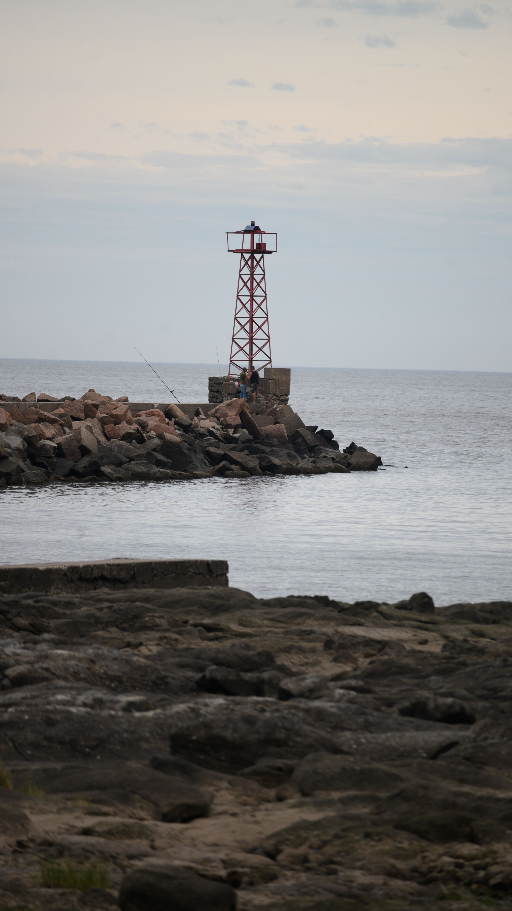
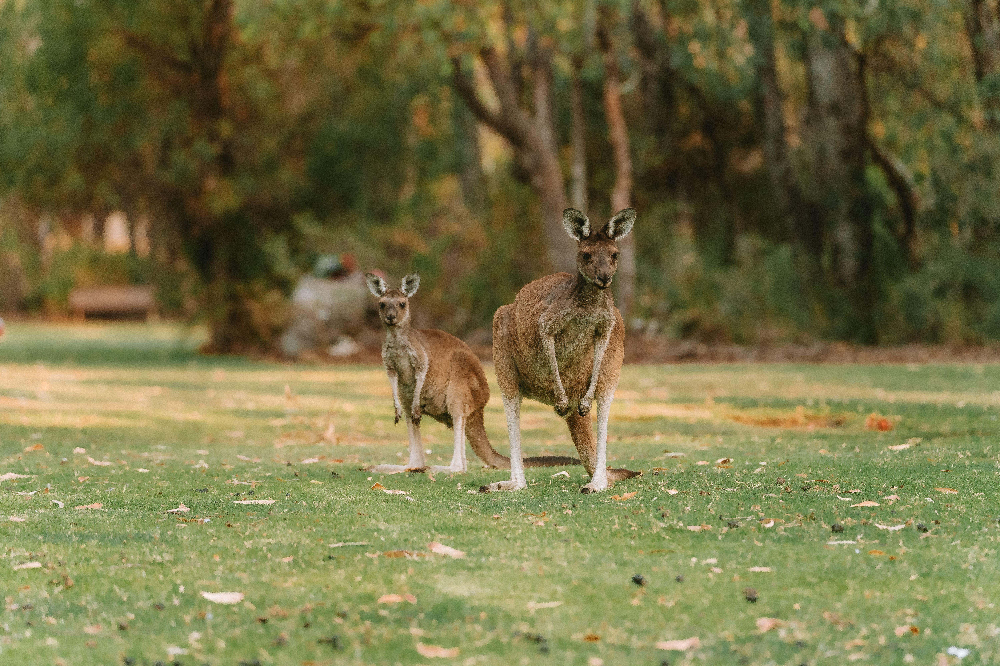

Trip Highlights
Wandering along Fire Island's quieter stretches reveals a rugged, unexpected side of the coast, where dense maritime trees frame massive, weathered boulders beside a calm, tucked-away pond. Sitting by the still water in the cool shade of the canopy, the crash of the nearby ocean fades into a peaceful backdrop that feels miles away from everything.
Gallery: Fire Island


Explore the Adventure!
Whether you are seeking peaceful coastal trails, scenic lighthouse views, or up-close encounters with local wildlife, Fire Island offers an unforgettable escape into nature. Pack your bags, step onto the boardwalks, and experience the beauty of the park firsthand—plan your visit today!